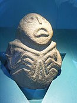
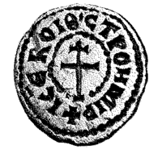
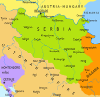
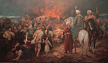
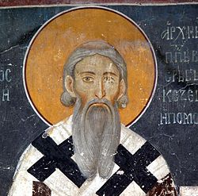
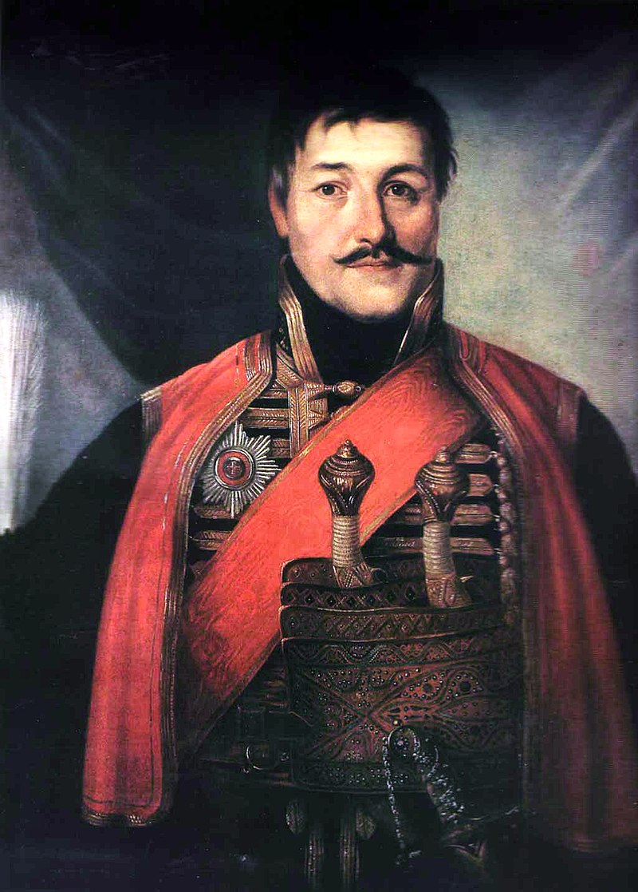
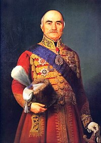

Gallery
Home
The most prominent Serbs
Famous events of our history
Gallery

Lepenski vir, 7000 BC

Seal of Prince Stroimir of Serbia
Felix romuliana, home of the Roman Emperor Galerius. Seventeen Roman Emperors were born in present-day Serbia
Dušan's Code, made by Serbian Tsar Dušan, a compilation of several legal systems. It was used in the Serbian Empire
Battle_of_Kosovo

Principality of Serbia 1878

Burning the bones of St. Sava

St. Sava, the founder of Serbian Ortodox Church

Djordje Petrovic Karadjordje, Grand Vozd of Serbia

Milos Obrenovic, Grand Vozd of Serbia